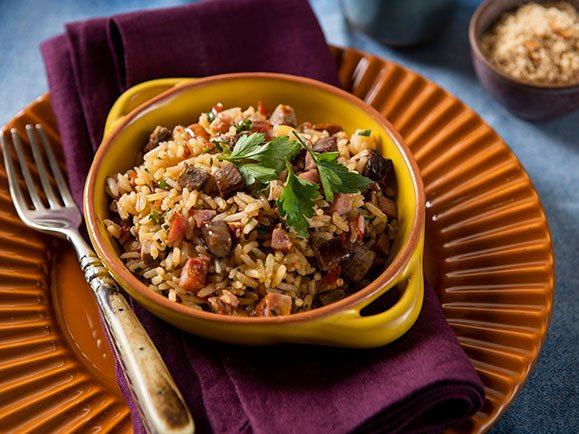

Arroz de carreteiro
O arroz de carreteiro é um prato típico da região Sul do Brasil. Ele normalmente é uma mistura de carne com arroz e alguns complementos e temperos.
Ingredientes
- 3 copos de arroz
- 500 g de carne seca
- 200 g de bacon fatiado
- 200 g de calabresa
- 1 tomate grande bem maduro
- 1 cebola grande
- Pimenta calabresa
- Salsa
- Sal
Modo de Preparo
Cozinhe a carne seca em panela de pressão, retire, espera esfriar e desfie. Reserve. Retire a pele da calabresa e corte em cubos juntamente com o bacon. Corte o tomate em cubos pequenos sem as sementes bem como a cebola. Reserve. Refogue o bacon e a calabresa até ficar bem dourada, acrescentando depois a cebola, tomate, pimenta calabresa e a carne desfiada. Após acrescente o arroz, afogue bem, adicione a água corrigindo o sal se necessário e abaixe o fogo aguardando secar. Quando pronto, colocar a salsa em cima.
Receita retirada do site TudoGostoso